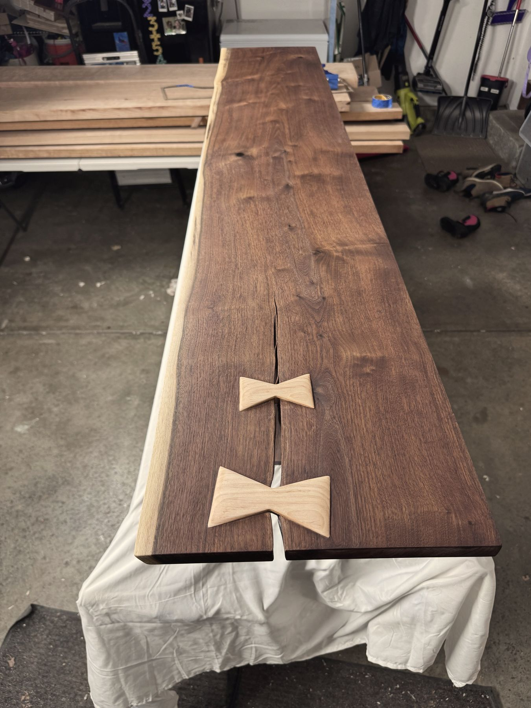

About
Hello.
Hi, I'm Ryan Johnson, the craftsman behind Cincy Tables. I'm a husband, a father of three, and a furniture maker passionate about creating pieces that are built to last. Working from my shop in Harrison, Ohio, I use locally sourced hardwoods to handcraft custom heirloom furniture designed to be enjoyed for generations.

My Story
From a bookshelf to a way of life.
I've always felt drawn to the creative and artistic side of life, but I didn't find my way to woodworking until much later.
While I was in graduate school, I had an idea: turn my bookshelf into a rolling bookshelf that could double as a ping-pong table. So I collected a few secondhand tools and got to work.
It wasn't fine woodworking. There were no hand-cut dovetails or heirloom-quality joinery. It was essentially a sheet of MDF ripped into rectangles, painted, and screwed onto the top of my bookshelf. But it didn't matter. I had an idea, I figured out how to build it, and suddenly that idea existed in the real world.
That feeling hooked me.
Next came a hanging chair. Then a dog bed. Then a circular, wall-mounted cactus holder thing that I'm still not sure has a proper name.
The projects got more ambitious. The tools accumulated. New skills were learned, mistakes were made, and slowly, plywood gave way to hardwood. The big-box store gave way to a local lumber yard, where I started learning to appreciate the character, beauty, and possibilities of the material itself.
What started as a seasonal hobby became a full-blown obsession.
Over the course of ten years, I went from building simple projects for myself to developing the skills and craftsmanship necessary to create high-quality furniture designed to last for generations.
And eventually, I had to make a choice.
After ten years as an Occupational Therapist, I decided to take a leap and pursue the thing that had started as a simple project in graduate school. With the support and encouragement of my wife, I left my career and started Cincy Tables.
What started with a simple idea and a handful of secondhand tools has grown into a craft, a career, and a way of life. Through Cincy Tables I get to keep chasing that feeling of turning an idea into something real, beautiful, and built to last.
Start a Project
Let's build something together.
Have a piece in mind? I'd love to hear about it. Whether it's a dining table, conference table, or a one-of-a-kind piece, let's create something built for your space.
Request a Quote →